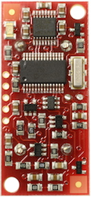
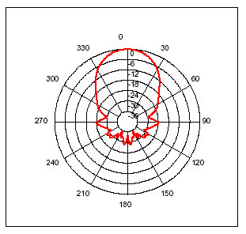

SRF08
Ultra sonic range finder
Technical Specification
Communication with the SRF08 ultrasonic rangefinder is via the I2C bus. This is available on popular controllers such as the OOPic and Stamp BS2p, as well as a wide variety of micro-controllers. To the programmer the SRF08 behaves in the same way as the ubiquitous 24xx series eeprom's, except that the I2C address is different. The default shipped address of the SRF08 is 0xE0. It can be changed by the user to any of 16 addresses E0, E2, E4, E6, E8, EA, EC, EE, F0, F2, F4, F6, F8, FA, FC or FE, therefore up to 16 sonar's can be used. In addition to the above addresses, all sonar's on the I2C bus will respond to address 0 - the General Broadcast address. This means that writing a ranging command to I2C address 0 (0x00) will start all sonar's ranging at the same time. This should be useful in ANN Mode (See below). The results must be read individually from each sonar's real address.
Connections
The "Do not connect" pin should be left unconnected. It is
actually the CPU MCLR line and is used once only in our workshop to program the
PIC16F872 on-board after assembly, and has an internal pull-up resistor. The SCL and SDA lines should each have a
pull-up resistor to +5v somewhere on the I2C bus. You only need one pair of
resistors, not a pair for every module. They are normally located with the bus
master rather than the slaves. The SRF08 is always a slave - never a bus master.
If you need them, I recommend 1.8k resistors. Some modules such as the OOPic
already have pull-up resistors and you do not need to add any more.
|
+5v SDA SCL Do not connect GND |
 |
Registers
The SRF08 appears as a set of 36 registers.
|
Location |
Read |
Write |
|
0 |
Software Revision |
Command Register |
|
1 |
Light Sensor |
Max Gain Register (default 31) |
|
2 |
1st Echo High Byte |
Range Register (default 255) |
|
3 |
1st Echo Low Byte |
N/A |
|
~~~~ |
~~~~ |
~~~~ |
|
34 |
17th Echo High Byte |
N/A |
|
35 |
17th Echo Low Byte |
N/A |
Only locations 0, 1 and 2 can be written to. Location 0 is the command register and is used to start a ranging session. It cannot be read. Reading from location 0 returns the SRF08 software revision. By default, the ranging lasts for 65mS, but can be changed by writing to the range register at location 2. If you do so, then you will likely need to change the analogue gain by writing to location 1. See the Changing Range and Analogue Gain sections below.
Location 1 is the onboard light sensor. This data is updated every time a new ranging command has completed and can be read when range data is read. The next two locations, 2 and 3, are the 16bit unsigned result from the latest ranging - high byte first. The meaning of this value depends on the command used, and is either the range in inches, or the range in cm or the flight time in uS. A value of zero indicates that no objects were detected. There are up to a further 16 results indicating echo's from more distant objects.
Commands
The are three commands to initiate a ranging (80 to 82), to return the result in inches, centimeters or
microseconds. There is also an ANN mode (Artificial
Neural Network) mode which is described later and a set of commands to change
the I2C address.
| Command | Action | |
| Decimal | Hex | |
| 80 | 0x50 | Ranging Mode - Result in inches |
| 81 | 0x51 | Ranging Mode - Result in centimeters |
| 82 | 0x52 | Ranging Mode - Result in micro-seconds |
| 83 | 0x53 | ANN Mode - Result in inches |
| 84 | 0x54 | ANN Mode - Result in centimeters |
| 85 | 0x55 | ANN Mode - Result in micro-seconds |
| 160 | 0xA0 | 1st in sequence to change I2C address |
| 165 | 0xA5 | 3rd in sequence to change I2C address |
| 170 | 0xAA | 2nd in sequence to change I2C address |
Ranging Mode
To initiate a ranging, write one of the above commands to the
command register and wait the required amount of time for completion and read as
many results as you wish. The echo buffer is cleared
at the start of each ranging. The first echo range is placed in locations 2,3.
the second in 4,5, etc. If a location (high and low bytes) is 0, then there will
be no further reading in the rest of the registers. The default and recommended time for completion
of ranging is 65mS, however
you can shorten this by writing to the range register before issuing a ranging
command. Light
sensor data at location 1 will also have been updated after a ranging
command.
ANN Mode
ANN mode (Artificial Neural Network) is designed to provide the multi echo
data in a way that is easier to input to a neural network, at least I hope it is
- I've not actually done it yet. ANN mode provides a 32 byte buffer (locations 4
to 35 inclusive) where each byte represents the 65536uS maximum flight time
divided into
32 chunks of 2048uS each - equivalent to about 352mm of range. If an echo is
received within a bytes time slot then it will be set to no-zero, otherwise it
will be zero. So if an echo is received from within the first 352mm, location 4
will be non-zero. If an object is detected 3m away the location 12 will be
non-zero (3000/352 = 8) (8+4=12). Arranging the data like this should be better
for a neural net than the other formats. The input to your network should be 0
if the byte is zero and 1 if its non-zero. I have a SOFM (Self Organizing
Feature Map) in mind for the neural net, but will hopefully be useful for any
type.
| Location 4 | Location 5 | Location 6 | Location 7 | Locations 8 - 35 |
| 0 - 352mm | 353 - 705mm | 706 - 1057mm | 1058 - 1410mm | and so on |
Locations 2,3 contain the range of the nearest object converted to inches, cm or uS and is the same as for Ranging Mode.
Checking for Completion of Ranging
You do not have to use a timer on your own controller to wait for ranging to
finish. You can take advantage of the fact that the SRF08 will not respond to
any I2C activity whilst ranging. Therefore, if you try to read from the SRF08
(we use the software revision number a location 0) then you will get 255 (0xFF)
whilst ranging. This is because the I2C data line (SDA) is pulled high if
nothing is driving it. As soon as the ranging is complete the SRF08 will again
respond to the I2C bus, so just keep reading the register until its not 255
(0xFF) anymore. You can then read the sonar data. Your controller can take
advantage of this to perform other tasks while the SRF08 is ranging.
Changing the Range
The maximum range of the SRF08 is set by an internal timer. By default, this is
65mS or the equivalent of 11 metres of range. This is much further than the 6
metres the SRF08 is actually capable of. It is possible to reduce the time
the SRF08 listens for an echo, and hence the range, by writing to the range
register at location 2. The range can be set in steps of about 43mm (0.043m or
1.68 inches) up to 11 metres.
The range is ((Range Register x 43mm) + 43mm) so setting the Range Register to 0
(0x00) gives a maximum range of 43mm. Setting the Range Register to 1 (0x01)
gives a maximum range of 86mm. More usefully, 24 (0x18) gives a range of 1 metre
and 140 (0x8C) is 6 metres. Setting 255 (0xFF) gives the original 11 metres (255
x 43 + 43 is 11008mm). There are two reasons you may wish to reduce the range.
1. To get at the range information quicker
2. To be able to fire the SRF08 at a faster rate.
If you only wish to get at the range information a bit sooner and will continue
to fire the SRF08 at 65ms of slower, then all will be well. However if you wish
to fire the SRF08 at a faster rate than 65mS, you will definitely need to reduce
the gain - see next section.
The range is set to maximum every time the SRF08 is powered-up. If you
need a different range, change it once as part of your system initialization
code.
Analogue Gain
The analogue gain register sets the Maximum gain of the analogue stages.
To set the maximum gain, just write one of these values to the gain register at location
1. During a ranging, the analogue gain starts off at its
minimum value of 94. This is increased at approx. 70uS intervals up to the maximum gain
setting, set by register 1. Maximum possible gain is reached after about 390mm of range. The
purpose of providing a limit to the maximum gain is to allow you to fire the
sonar more rapidly than 65mS. Since the ranging can be very short, a new ranging can be initiated as soon as
the previous range data has been read. A potential hazard with this is that the
second ranging may pick up a distant echo returning from the previous
"ping", give
a false result of a close by object when there is none. To reduce this
possibility, the maximum gain can be reduced to limit the modules sensitivity to
the weaker distant echo, whilst still able to detect close by objects. The
maximum gain setting is stored only in the CPU's RAM and is initialized to
maximum on power-up, so if you only want do a ranging every 65mS, or longer, you
can ignore the Range and Gain Registers.
Note - Effective in Ranging Mode
only, in ANN mode, gain is controlled automatically.
| Gain Register | Maximum Analogue Gain | |
| Decimal | Hex | |
| 0 | 0x00 | Set Maximum Analogue Gain to 94 |
| 1 | 0x01 | Set Maximum Analogue Gain to 97 |
| 2 | 0x02 | Set Maximum Analogue Gain to 100 |
| 3 | 0x03 | Set Maximum Analogue Gain to 103 |
| 4 | 0x04 | Set Maximum Analogue Gain to 107 |
| 5 | 0x05 | Set Maximum Analogue Gain to 110 |
| 6 | 0x06 | Set Maximum Analogue Gain to 114 |
| 7 | 0x07 | Set Maximum Analogue Gain to 118 |
| 8 | 0x08 | Set Maximum Analogue Gain to 123 |
| 9 | 0x09 | Set Maximum Analogue Gain to 128 |
| 10 | 0x0A | Set Maximum Analogue Gain to 133 |
| 11 | 0x0B | Set Maximum Analogue Gain to 139 |
| 12 | 0x0C | Set Maximum Analogue Gain to 145 |
| 13 | 0x0D | Set Maximum Analogue Gain to 152 |
| 14 | 0x0E | Set Maximum Analogue Gain to 159 |
| 15 | 0x0F | Set Maximum Analogue Gain to 168 |
| 16 | 0x10 | Set Maximum Analogue Gain to 177 |
| 17 | 0x11 | Set Maximum Analogue Gain to 187 |
| 18 | 0x12 | Set Maximum Analogue Gain to 199 |
| 19 | 0x13 | Set Maximum Analogue Gain to 212 |
| 20 | 0x14 | Set Maximum Analogue Gain to 227 |
| 21 | 0x15 | Set Maximum Analogue Gain to 245 |
| 22 | 0x16 | Set Maximum Analogue Gain to 265 |
| 23 | 0x17 | Set Maximum Analogue Gain to 288 |
| 24 | 0x18 | Set Maximum Analogue Gain to 317 |
| 25 | 0x19 | Set Maximum Analogue Gain to 352 |
| 26 | 0x1A | Set Maximum Analogue Gain to 395 |
| 27 | 0x1B | Set Maximum Analogue Gain to 450 |
| 28 | 0x1C | Set Maximum Analogue Gain to 524 |
| 29 | 0x1D | Set Maximum Analogue Gain to 626 |
| 30 | 0x1E | Set Maximum Analogue Gain to 777 |
| 31 | 0x1F | Set Maximum Analogue Gain to 1025 |
Note that the relationship between the Gain Register setting and
the actual gain is not a linear one. Also there is no magic formula to say
"use this gain setting with that range setting". It depends on the
size, shape and material of the object and what else is around in the room. Try
playing with different settings until you get the result you want. If you appear
to get false readings, it may be echo's from previous "pings", try
going back to firing the SRF08 every 65mS or longer (slower).
If you are in any doubt about the Range and Gain Registers, remember they are
automatically set by the SRF08 to their default values when it is powered-up.
You can ignore and forget about them and the SRF08 will work fine, detecting
objects up to 6 metres away every 65mS or slower.
Light Sensor
The SRF08 has a light sensor on-board. A reading of the light intensity is made
by the SRF08 each time a ranging takes place in either Ranging or ANN Modes (
The A/D conversion is actually done just before the "ping" whilst the
+/- 10v generator is stabilizing). The reading increases as the brightness
increases, so you will get a maximum value in bright light and minimum value in
darkness. It should get close to 2-3 in complete darkness and up to about 248
(0xF8) in bright light. The light intensity can be read from the Light Sensor
Register at location 1 at the same time that you are reading the range
data.
LED
The red LED is used to flash out a code for the I2C address on power-up (see
below). It also gives a brief flash during the "ping" whilst ranging.
Changing the I2C Bus Address
To change the I2C address of the SRF08 you must have only one sonar on the bus.
Write the 3 sequence commands in the correct order followed by the address.
Example; to change the address of a sonar currently at 0xE0 (the default shipped
address) to 0xF2, write the following to address 0xE0; (0xA0, 0xAA, 0xA5, 0xF2
). These commands must be sent in the correct sequence to change the I2C
address, additionally, No other command may be issued in the middle of the
sequence. The sequence must be sent to the command register at location 0, which
means 4 separate write transactions on the I2C bus. When done, you should label the sonar with its address, however if you
do forget, just power it up without sending any commands. The SRF08 will flash
its address out on the LED. One long flash followed by a number of shorter
flashes indicating its address. The flashing is terminated immediately on
sending a command the SRF08.
| Address | Long Flash | Short flashes | |
| Decimal | Hex | ||
| 224 | E0 | 1 | 0 |
| 226 | E2 | 1 | 1 |
| 228 | E4 | 1 | 2 |
| 230 | E6 | 1 | 3 |
| 232 | E8 | 1 | 4 |
| 234 | EA | 1 | 5 |
| 236 | EC | 1 | 6 |
| 238 | EE | 1 | 7 |
| 240 | F0 | 1 | 8 |
| 242 | F2 | 1 | 9 |
| 244 | F4 | 1 | 10 |
| 246 | F6 | 1 | 11 |
| 248 | F8 | 1 | 12 |
| 250 | FA | 1 | 13 |
| 252 | FC | 1 | 14 |
| 254 | FE | 1 | 15 |
Take care not to set more than one sonar to the same address, there will be a bus collision and very unpredictable results.
Current Consumption
Average current consumption measured on our prototype is around 12mA during
ranging, and 3mA standby. The module will automatically go to standby mode after
a ranging, whilst waiting for a new command on the I2C bus. The actual measured
current profile is as follows;
| Operation | Current | Duration |
| Ranging command received - Power on | 275mA | 3uS |
| +/- 10v generator Stabilization |
25mA |
600uS |
| 8 cycles of 40kHz "ping" | 40mA | 200uS |
| Ranging | 11mA | 65mS max |
| Standby | 3mA | indefinite |
The above values are for guidance only, they are not tested on production units.
Changing beam pattern and beam width
You can't! This is a question which crops up regularly, however there is no easy way to reduce or change
the beam width that I'm aware of. The beam pattern of
the SRF08 is conical with the width of the beam being a function of the surface
area of the transducers and is fixed. The beam pattern of the transducers used on
the SRF08, taken from the manufacturers data sheet, is shown below.

There is more information in the sonar faq.
Your feedback/comments/criticisms and wish lists are very
welcome, as always.